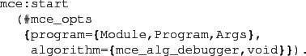

Next: Debugger Commands Up: The Debugger: Examining Counterexamples Previous: The Debugger: Examining Counterexamples Contents
The debugger can be started in a number of ways. If a counterexample has been produced, and is stored in the process dictionary under the key result, the normal manner is to invoke the debugger using the start function applied to mce:result().
It is not necessary to generate a counterexample before starting the debugger,
another method to begin a debugging session is to specify the algorithm
mce_alg_debugger in the mce_opts structure:

In addition the @mce:debug/N@ function calls start
the debugger directly (by specifying the @mce_alg_debugger@
algorithm).